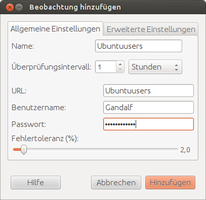
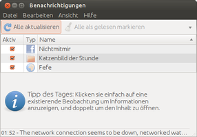
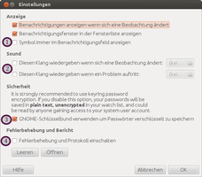

Specto
Dieser Artikel wurde für die folgenden Ubuntu-Versionen getestet:
Ubuntu 14.04 Trusty Tahr
Zum Verständnis dieses Artikels sind folgende Seiten hilfreich:
Specto  ist ein Programm, um Änderungen zu überwachen und sich im Falle einer Änderung informieren zu lassen. Dabei werden neben Webseiten, E-Mail-Postfächern und dem sozialen Netzwerk Facebook
ist ein Programm, um Änderungen zu überwachen und sich im Falle einer Änderung informieren zu lassen. Dabei werden neben Webseiten, E-Mail-Postfächern und dem sozialen Netzwerk Facebook  auch die Kontrolle lokaler Prozesse, Ordner, Dateien und Ports unterstützt.
auch die Kontrolle lokaler Prozesse, Ordner, Dateien und Ports unterstützt.
Installation¶
Specto ist in den offiziellen Paketquellen enthalten. Folgendes Paket muss installiert werden [1]:
specto (universe)
 mit apturl
mit apturl
Paketliste zum Kopieren:
sudo apt-get install specto
sudo aptitude install specto
Einrichtung¶
Sobald specto zum ersten Mal gestartet wird [2], präsentiert sich dem Nutzer ein aufgeräumtes, relativ leeres Fenster. Nun müssen Beobachtungsobjekte hinzugefügt werden. Dazu klickt man einfach auf "Hinzufügen", wählt eine Kategorie aus, im Beispiel "System -> Prozess" und macht die erforderlichen Angaben, wie hier den Prozessnamen.
Sind ein paar Beobachtungsobjekte hinzugefügt, sieht das Fenster in etwa wie hier dargestellt aus, wobei es natürlich wesentlich voller sein kann.
In fett gedruckt dargestellten Einträgen hat sich etwas verändert, beim Rest nicht. Klickt man auf einen Eintrag, werden weitere Eigenschaften dargestellt; ein Doppelklick bewirkt das Öffnen einen Dialoges, um den Eintrag zu bearbeiten.
|  |
| Hinzufügen-Dialog |
|  |
| Specto nach ein paar Minuten |
|  |
| Spectos Einstellungsdialog |
Einstellungen¶
Der Einstellungsdialog ist im Menü unter "Bearbeiten -> Einstellungen" zu finden.
Symbol im Benachrichtigungsfeld¶
Wer sich am ständig geöffneten Specto-Fenster stört, hat die Möglichkeit, den im Bild des Einstellungsdialog mit 1 markierten Haken zu setzen, dann nistet sich Specto im Benachrichtigungsfeld ein. Ein Klick auf das Icon versteckt Specto dann, ein erneuter Klick holt es wieder hervor.
Klänge¶
Um bei Änderungen oder Fehlern auch hörbar alarmiert zu werden, können unter 2 dafür Klänge aktiviert werden. Hierzu einfach die jeweilige Checkbox aktivieren und den Klang auswählen.
Sicherheit¶
Passwörter, zum Beispiel vom beobachteten E-Mail-Postfach, sollte man besser im GNOME-Schlüsselbund speichern, indem man die Checkbox bei 3 aktiviert. Ansonsten werden die Passwörter unverschlüsselt auf der Festplatte gespeichert, was ein hohes Sicherheitsrisiko darstellen kann.
Fehler¶
Nach Einschalten der Checkbox neben Numero 4 wird von allem, was Specto tut, ein Protokoll erstellt. Somit kann man Fehler, die aufgetreten sind, auch im Nachhinein finden und zukünftig vermeiden.
- Erstellt mit Inyoka
-
 2004 – 2017 ubuntuusers.de • Einige Rechte vorbehalten
2004 – 2017 ubuntuusers.de • Einige Rechte vorbehalten
Lizenz • Kontakt • Datenschutz • Impressum • Serverstatus -
Serverhousing gespendet von